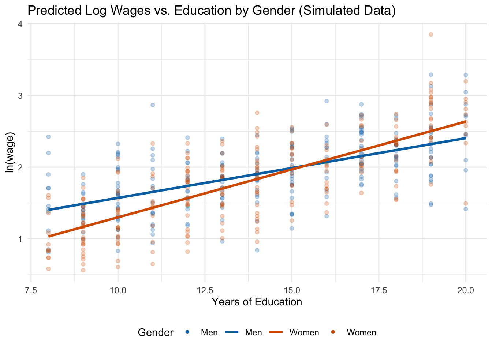

wage_data <- wooldridge::wage1 |>
mutate(female_married = female * married)8 Interaction Effects
TipKey Questions
- What is an interaction effect and why do we need one?
- How do we interpret interactions between two dummy variables?
- How do we interpret interactions between a dummy and a continuous variable?
- How do we compute the total effect of a variable when interactions are present?
- What are some best practices for working with interaction terms?
In Chapter 7, we saw how dummy variables allow us to include categorical information in regression models. A dummy variable shifts the intercept of the regression line up or down for different groups, while keeping the slope the same. But is that always realistic?
Consider the gender wage gap. A simple model with a female dummy variable assumes that the return to education, experience, and every other variable is identical for men and women—the only difference is a level shift in wages. In reality, we might expect that the returns to these characteristics differ across groups. For example, an additional year of education might increase wages by a different amount for men than for women.
Interaction effects allow us to model exactly this kind of complexity. By including the product of two variables in our regression, we can allow the effect of one variable to depend on the value of another.
8.1 Why Interactions Matter
Recall the dummy variable model from Chapter 7. When we estimated:
\[ score = \beta_0 + \beta_1(hsgpa) + \beta_2(calculus) + \mu \]
the dummy variable calculus shifted the intercept but forced both groups (calculus-takers and non-calculus-takers) to have the same slope on GPA. In other words, the effect of a one-unit increase in GPA was assumed to be identical regardless of whether the student took calculus.
But what if calculus preparation actually changes how much GPA matters for economics performance? Perhaps students who took calculus are better equipped to convert their academic ability into economics success, meaning GPA has a stronger effect for that group. To test this hypothesis, we need a way to allow the slope to differ between groups—and that’s exactly what interaction terms do.
8.2 Interactions Between Two Dummy Variables
The simplest type of interaction involves two dummy variables. Suppose we want to understand how gender and marital status jointly affect wages. We might estimate:
\[ \ln(wage) = \beta_0 + \beta_1(female) + \beta_2(married) + \beta_3(female \times married) + \mu \]
The term \(female \times married\) is the interaction term. It equals 1 only when both conditions are true (the person is female and married), and 0 otherwise.
8.2.1 How to Interpret the Coefficients
With an interaction between two dummy variables, we need to think carefully about what each coefficient represents. The trick is to recognize that each coefficient in this model has a very specific meaning that depends on the values of the other variables in the model.
Before diving in, recall from Chapter 7 that whenever we include dummy variables, there is always a baseline group—the group for which all dummy variables equal zero. In this model, the baseline group is unmarried men (\(female = 0\), \(married = 0\)). The intercept \(\beta_0\) represents the average \(\ln(wage)\) for this baseline group, and every other coefficient measures an effect relative to unmarried men. Keeping this baseline in mind is essential for interpreting every other coefficient.
Let’s start with \(\beta_1\), the coefficient on female. In a model without the interaction term, \(\beta_1\) would represent the effect of being female on wages, holding marital status constant. But once we add the interaction term, \(\beta_1\) takes on a more specific meaning: it represents the effect of being female when married equals zero—that is, the gender wage gap among unmarried workers only (relative to our baseline of unmarried men). Why? Because when \(married = 0\), the interaction term \(female \times married\) drops out entirely (it equals zero), and we are left with just the main effect of female.
The same logic applies to \(\beta_2\), the coefficient on married. It represents the effect of being married when female equals zero—in other words, the marriage premium for men only. When \(female = 0\), the interaction term vanishes, and \(\beta_2\) captures the full effect of marriage.
Now for the key coefficient: \(\beta_3\), the interaction term. This tells us how much the effect of one variable changes depending on the value of the other. In other words, \(\beta_3\) answers the question: is the marriage premium different for women than for men? Or equivalently: is the gender wage gap different for married workers than for unmarried workers?
To see all of this concretely, we can plug in the values of female and married for each group and derive the predicted outcome:
| Group | female | married | Predicted \(\ln(wage)\) |
|---|---|---|---|
| Unmarried men (baseline) | 0 | 0 | \(\beta_0\) |
| Unmarried women | 1 | 0 | \(\beta_0 + \beta_1\) |
| Married men | 0 | 1 | \(\beta_0 + \beta_2\) |
| Married women | 1 | 1 | \(\beta_0 + \beta_1 + \beta_2 + \beta_3\) |
Notice in Table 8.1 that the predicted wage for married women includes all four terms: \(\beta_0\) (the baseline), \(\beta_1\) (the female effect among unmarried workers), \(\beta_2\) (the marriage effect for men), and \(\beta_3\) (the additional interaction effect). The total effect of being a married woman (relative to an unmarried man) is therefore \(\beta_1 + \beta_2 + \beta_3\)—not just \(\beta_1 + \beta_2\).
Why does this matter? If \(\beta_3 = 0\), then being married has the same effect on wages for men and women, and being female has the same effect regardless of marital status. In that case, we could drop the interaction term and the simpler model would suffice. But if \(\beta_3 \neq 0\), the combined effect of being female and married is different from what we would get by simply adding the individual effects together. The interaction term captures this “extra” (or “less”) effect.
8.3 Interactions Between a Dummy and a Continuous Variable
Another type of interaction common in applied work is interacting a dummy variable with a continuous variable. This allows the slope on the continuous variable to differ across groups.
Suppose we want to know whether the returns to education differ by gender. We estimate:
\[ \ln(wage) = \beta_0 + \beta_1(female) + \beta_2(educ) + \beta_3(female \times educ) + \mu \]
The interaction term \(female \times educ\) equals 0 for all men (since \(female = 0\)) and equals the value of educ for all women. This means the model produces different regression lines for men and women:
For men (\(female = 0\)): \[ \ln(wage) = \beta_0 + \beta_2(educ) \]
For women (\(female = 1\)): \[ \ln(wage) = (\beta_0 + \beta_1) + (\beta_2 + \beta_3)(educ) \]
Notice that this model gives each group its own intercept and its own slope. Men have intercept \(\beta_0\) and slope \(\beta_2\). Women have intercept \((\beta_0 + \beta_1)\) and slope \((\beta_2 + \beta_3)\). This is a crucial difference from the dummy-only model in Chapter 7, which gave each group a different intercept but forced them to share the same slope. With the interaction term, we now have two completely separate regression lines—one for each group—that can start at different levels and change at different rates.
The coefficient \(\beta_1\) captures the difference in intercepts (the level shift for women when education is zero), while \(\beta_3\) captures the difference in slopes (how much more or less women gain from each additional year of education compared to men).
8.3.1 Example: Returns to Education by Gender (Simulated Data)
To clearly see how an interaction between a dummy and a continuous variable works, let’s use simulated data where we know the true relationship. We will generate a dataset where:
- Men earn a return of about 8% per year of education,
- Women earn a return of about 14% per year of education (a steeper slope),
- Women start with lower baseline wages than men (a lower intercept).
Because the two groups have different intercepts and different slopes, the gender wage gap is large at low education levels but shrinks—and eventually reverses—at higher levels.
set.seed(42)
n <- 500
sim_data <- tibble(
female = rep(c(0, 1), each = n/2),
educ = round(runif(n, min = 8, max = 20)),
error = rnorm(n, mean = 0, sd = 0.4),
lwage = 0.8 + (-0.90) * female + 0.08 * educ + 0.06 * female * educ + error
) |>
mutate(female_educ = female * educ)Here’s a peek at the first few rows. Notice how female_educ equals zero for all men (since female = 0) and equals the education level itself for women:
| ln(wage) | female | educ | female × educ |
|---|---|---|---|
| 1.852 | 1 | 9 | 9 |
| 2.874 | 0 | 17 | 0 |
| 1.399 | 0 | 9 | 0 |
| 1.717 | 1 | 14 | 14 |
| 2.131 | 1 | 19 | 19 |
| 1.820 | 0 | 14 | 0 |
| 1.227 | 1 | 9 | 9 |
| 3.128 | 0 | 19 | 0 |
Now we estimate the interaction model on this simulated data:
lm_slope <- lm(lwage ~ female + educ + female_educ, data = sim_data)
summary(lm_slope)
Call:
lm(formula = lwage ~ female + educ + female_educ, data = sim_data)
Residuals:
Min 1Q Median 3Q Max
-1.14268 -0.25481 0.00376 0.28289 1.34974
Coefficients:
Estimate Std. Error t value Pr(>|t|)
(Intercept) 0.73684 0.10334 7.131 0.00000000000355 ***
female -0.77380 0.14270 -5.423 0.00000009185360 ***
educ 0.08335 0.00710 11.739 < 0.0000000000000002 ***
female_educ 0.05028 0.00995 5.053 0.00000061274469 ***
---
Signif. codes: 0 '***' 0.001 '**' 0.01 '*' 0.05 '.' 0.1 ' ' 1
Residual standard error: 0.3926 on 496 degrees of freedom
Multiple R-squared: 0.5109, Adjusted R-squared: 0.5079
F-statistic: 172.7 on 3 and 496 DF, p-value: < 0.00000000000000022Because this is simulated data, the estimated coefficients should be close to the true values we built in. Let’s interpret them:
- The return to education for men is \(\hat{\beta}_2 \approx 0.083\), meaning each additional year of education is associated with approximately a 8.3% increase in wages.
- The return to education for women is \(\hat{\beta}_2 + \hat{\beta}_3 \approx 0.134\), or about a 13.4% increase per year. Women have a steeper slope—each year of education is worth more for women than for men.
- The coefficient on
female(\(\hat{\beta}_1 \approx -0.774\)) is the gender wage gap when education equals zero. This is a large negative number, but recall that nobody in our data actually has zero years of education—this is the intercept difference, not the gap at any realistic education level. - The interaction term (\(\hat{\beta}_3 \approx 0.05\)) tells us that women’s return to education is about 5 percentage points higher per year than men’s.
8.3.2 Visualizing Different Slopes
The figure below shows the predicted regression lines for men and women, along with the simulated data points. Notice that unlike the dummy variable model from Chapter 7 (which produced parallel lines), the interaction model produces lines with different slopes:

Figure 8.2 makes the key point visually clear: the two regression lines are not parallel. Men start with higher predicted wages at low education levels, but because women have a steeper slope, the gap narrows as education increases. At very high levels of education, the lines cross and women are predicted to earn more than men. This is exactly the kind of pattern that a model without an interaction term would completely miss—it would force both groups to have the same slope and report only an average level difference.
ImportantComparing Dummy-Only vs. Interaction Models
| Feature | Dummy-only model | Interaction model |
|---|---|---|
| Intercept | Different for each group | Different for each group |
| Slope | Same for all groups | Different for each group |
| Assumption | Effect of \(X\) is the same across groups | Effect of \(X\) can vary across groups |
8.4 Computing Effects with Interactions
When a model includes interaction terms, computing the total effect of a variable requires extra care. A common mistake is to look only at the “main effect” coefficient and forget about the interaction term.
8.4.1 The General Rule
In a model with interactions, the total effect of changing a variable must account for all terms in which that variable appears.
Consider our model: \[ \ln(wage) = \beta_0 + \beta_1(female) + \beta_2(educ) + \beta_3(female \times educ) + \mu \]
The total effect of education on wages is: \[ \frac{\partial \ln(wage)}{\partial educ} = \beta_2 + \beta_3(female) \]
This depends on the value of female! For men (\(female = 0\)), the effect is just \(\beta_2\). For women (\(female = 1\)), the effect is \(\beta_2 + \beta_3\).
Similarly, the total effect of being female is: \[ \frac{\partial \ln(wage)}{\partial female} = \beta_1 + \beta_3(educ) \]
The wage effect of being female depends on education level. At low levels of education, the effect is dominated by \(\beta_1\), which is a large negative number in our simulated example. But because \(\beta_3\) is positive (women have steeper returns to education), each additional year of education reduces the gender wage gap by \(\beta_3\). At high enough levels of education, the gap can even reverse.
8.4.2 Computing the Gender Wage Gap at Different Education Levels
Using our estimated coefficients, we can compute the gender wage gap at various education levels:
educ_levels <- c(8, 12, 14, 16, 18)
gap_table <- tibble(
`Years of Education` = educ_levels,
`Gender Wage Gap (log points)` = round(slope_coefs[2] + slope_coefs[4] * educ_levels, 3),
`Approx. % Gap` = round(100 * (slope_coefs[2] + slope_coefs[4] * educ_levels), 1)
)
knitr::kable(gap_table,
caption = "Estimated Gender Wage Gap at Different Education Levels")| Years of Education | Gender Wage Gap (log points) | Approx. % Gap |
|---|---|---|
| 8 | -0.372 | -37.2 |
| 12 | -0.170 | -17.0 |
| 14 | -0.070 | -7.0 |
| 16 | 0.031 | 3.1 |
| 18 | 0.131 | 13.1 |
8.5 Interactions in Practice: Sacramento Housing
Let’s work through one more example to solidify the interpretation of interaction terms. We will use the Sacramento housing dataset to examine whether the effect of living in the suburbs on home prices differs by property type.
Before estimating any model, let’s understand the variables we are working with:
ln_price: our dependent variable, the natural log of the sale price of a home.sqft: a continuous variable measuring the interior square footage of the home.suburb: a dummy variable equal to 1 if a home is outside the city limits of Sacramento and 0 if it is inside the city. This is our location variable.type.f: a factor variable for property type. It takes three values: Condo, Multi-Family, and Residential. Because we are using this as a factor, R will automatically create dummy variables and choose a baseline category.
Since type.f has three categories, R will create two dummy variables (for Multi-Family and Residential) and use Condo as the omitted baseline. Combined with the suburb dummy, our baseline group is a condo in Sacramento proper. Every coefficient in the model will be interpreted relative to this group.
The interaction type.f:suburb produces two interaction terms: Multi-Family \(\times\) Suburb and Residential \(\times\) Suburb. These allow the suburb premium (or penalty) to differ by property type. For example, being in the suburbs might increase the price of a single-family home substantially, but have little effect—or even a negative effect—on a condo.
sac_data <- modeldata::Sacramento |>
mutate(
ln_price = log(price),
type.f = factor(type),
suburb = case_when(city == "SACRAMENTO" ~ 0, TRUE ~ 1)
)
lm_housing <- lm(ln_price ~ sqft + type.f + suburb + type.f:suburb, data = sac_data)| log(Sale Price) | |
|---|---|
| * p < 0.1, ** p < 0.05, *** p < 0.01 | |
| Square Feet | 0.0005*** |
| (0.0000) | |
| Suburb | 0.1824* |
| (0.0951) | |
| Type: Multi-Family | -0.0341 |
| (0.1302) | |
| Type: Residential | 0.1832*** |
| (0.0706) | |
| Multi-Family x Suburb | 0.2366 |
| (0.2469) | |
| Residential x Suburb | 0.0010 |
| (0.0981) | |
| Num.Obs. | 932 |
| R2 Adj. | 0.567 |
Now let’s interpret this table. Remember that the baseline is a condo in Sacramento proper. Each main effect tells us the effect of one characteristic changing while holding the others at their baseline values, and the interaction terms tell us how the suburb effect differs for each property type. We can build up the predicted effect for each group step by step:
| Property Type | Location | Formula | Value |
|---|---|---|---|
| Condo | Sacramento | \(\hat{\beta}_0\) | 11.208 |
| Multi-Family | Sacramento | \(\hat{\beta}_0 + \hat{\beta}_{MF}\) | 11.174 |
| Residential | Sacramento | \(\hat{\beta}_0 + \hat{\beta}_{Res}\) | 11.391 |
| Condo | Suburb | \(\hat{\beta}_0 + \hat{\beta}_{Sub}\) | 11.39 |
| Multi-Family | Suburb | \(\hat{\beta}_0 + \hat{\beta}_{MF} + \hat{\beta}_{Sub} + \hat{\beta}_{MF \times Sub}\) | 11.593 |
| Residential | Suburb | \(\hat{\beta}_0 + \hat{\beta}_{Res} + \hat{\beta}_{Sub} + \hat{\beta}_{Res \times Sub}\) | 11.574 |
The interaction terms tell us whether the suburb premium differs by property type. If the interaction terms are statistically significant, it means the price difference between suburbs and Sacramento proper is not the same for all property types.
8.6 What Happens If You Only Include the Interaction?
A common question—especially when first learning about interaction terms—is to include the interaction without the main effects. Let’s see concretely why this is may be a problem using our wage data.
Suppose a researcher is interested in the wage penalty for married women and estimates:
\[ \ln(wage) = \beta_0 + \beta_1(female \times married) + \mu \]
This model includes only the interaction term, with no separate terms for female or married. Let’s estimate it alongside the correctly specified model and compare:
wage_data <- wooldridge::wage1 |>
mutate(female_married = female * married)
# Correct model: main effects + interaction
lm_correct <- lm(log(wage) ~ female + married + female_married, data = wage_data)
# Incorrect model: interaction only (no main effects)
lm_wrong <- lm(log(wage) ~ female_married, data = wage_data)| Correct (with main effects) | Incorrect (interaction only) | |
|---|---|---|
| * p < 0.1, ** p < 0.05, *** p < 0.01 | ||
| Female | -0.1316** | |
| (0.0668) | ||
| Married | 0.4267*** | |
| (0.0616) | ||
| Female × Married | -0.3748*** | -0.2432*** |
| (0.0857) | (0.0524) | |
| Num.Obs. | 526 | 526 |
| R2 Adj. | 0.209 | 0.038 |
In the correct model (Column 1), we can see the separate effects: being female reduces wages, being married increases them (for men), and the interaction captures how the marriage premium differs by gender. This gives us a rich, nuanced picture of the data.
In the incorrect model (Column 2), the single coefficient on \(female \times married\) is forced to do all the work. It can only compare one group (married women) against everyone else pooled together—unmarried men, unmarried women, and married men are all lumped into the baseline. This makes the coefficient nearly uninterpretable: it conflates the effect of being female, the effect of being married, and their interaction into a single number.
To see the problem even more starkly, consider what this model predicts for each group:
| Group | Correct: Formula | Correct: Value | Interaction Only: Formula | Interaction Only: Value |
|---|---|---|---|---|
| Unmarried men | \(\hat{\beta}_0\) | 1.521 | \(\hat{\beta}_0\) | 1.684 |
| Unmarried women | \(\hat{\beta}_0 + \hat{\beta}_1\) | 1.389 | \(\hat{\beta}_0\) | 1.684 |
| Married men | \(\hat{\beta}_0 + \hat{\beta}_2\) | 1.947 | \(\hat{\beta}_0\) | 1.684 |
| Married women | \(\hat{\beta}_0 + \hat{\beta}_1 + \hat{\beta}_2 + \hat{\beta}_3\) | 1.441 | \(\hat{\beta}_0 + \hat{\beta}_1\) | 1.441 |
The correct model gives each of the four groups a distinct predicted value, reflecting the separate and joint effects of gender and marital status. The interaction-only model, by contrast, assigns the same predicted wage to unmarried men, unmarried women, and married men—it cannot distinguish between them at all. Only married women get a different prediction.
WarningAlways Include the Main Effects
When you include an interaction term \(X_1 \times X_2\) in a model, you should almost always also include \(X_1\) and \(X_2\) as separate regressors. Omitting the main effects forces the interaction coefficient to be compared to a baseline which is composed of a whole bunch of different groups, producing misleading results.
8.7 Summary
This chapter introduced interaction effects, which allow the effect of one variable to depend on the value of another.
Interactions between two dummy variables allow us to model situations where the combination of two categorical characteristics has an effect different from what we would predict by simply adding the individual effects. The interaction coefficient captures this “extra” (or “less”) effect.
Interactions between a dummy and a continuous variable allow different groups to have different slopes—that is, different returns to the continuous variable. This is a crucial extension beyond the simple dummy variable model, which only allows different intercepts.
Computing total effects in interaction models requires care. The effect of any variable involved in an interaction depends on the value of the variable it is interacted with. Always evaluate the total effect at specific, meaningful values rather than reporting only the main effect coefficient.
When working with interactions, always include the main effects alongside the interaction term, and remember to compute total effects by evaluating the interaction at specific values of the other variable.
8.8 Check Your Understanding
For each question below, select the best answer from the dropdown menu. The dropdown will turn green if correct and red if incorrect.
TipShow Explanation
The interaction coefficient \(\beta_3\) captures the additional effect of being both female and married, beyond what we would expect from adding \(\beta_1\) (the female effect) and \(\beta_2\) (the marriage effect) separately. The total effect of being a married woman relative to the baseline is \(\beta_1 + \beta_2 + \beta_3\).
In the model \(\ln(wage) = \beta_0 + \beta_1(female) + \beta_2(educ) + \beta_3(female \times educ)\), the total effect of being female is found by taking the derivative with respect to
female: \(\beta_1 + \beta_3(educ)\). This means the gender wage gap depends on education level.A dummy variable alone shifts the intercept (parallel lines for different groups). An interaction between a dummy and a continuous variable allows different slopes, meaning the regression lines can cross or diverge rather than remaining parallel.
The total effect of being a married woman (relative to an unmarried man) requires adding all three relevant coefficients: \(\beta_1\) (the female effect), \(\beta_2\) (the marriage effect), and \(\beta_3\) (the interaction). A common mistake is to forget the interaction term and report only \(\beta_1 + \beta_2\).
Including only the interaction term without the main effects constrains the model by assuming the individual variables have no separate effect. This forces the interaction coefficient to absorb both the individual and joint effects, producing biased and misleading estimates.
The total effect of being female is \(\beta_1 + \beta_3 \times educ = -0.30 + 0.02 \times 16 = -0.30 + 0.32 = 0.02\). So at 16 years of education, the gender wage gap is approximately 2% (women earn about 2% more than men). This illustrates how interactions can flip the direction of an effect at different values of the interacted variable.